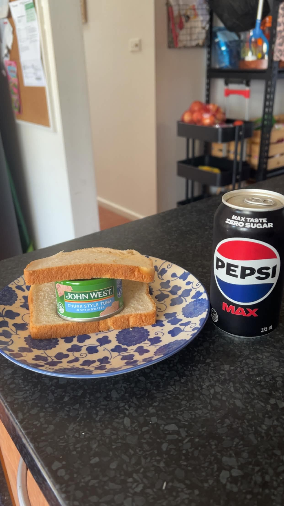

Home
Drink of Coke & Tuna Sandwich

Description
A relaxing drink of Coke, accompanied by a tuna sandwich, preferably inside of a controlled environment.
Ingredients
-
1 can of Coke
-
95 gram can of your favourite tuna
-
2 slices of bread, white
-
1 scratched CD of Snow Patrol's Eyes Open
-
your preferred media player
Steps
-
Crack upon your tuna can, drain the liquid.
-
Lay out your bread on a plate, with a fork remove the tuna from the can and spread it on the slice of bread. Place second slice on top of the tuna.
-
Crack open the can of coke and sip through the eye.
-
Insert scratched Snow Patrol CD into your favourite media player.
-
Consume, enjoy and relax.